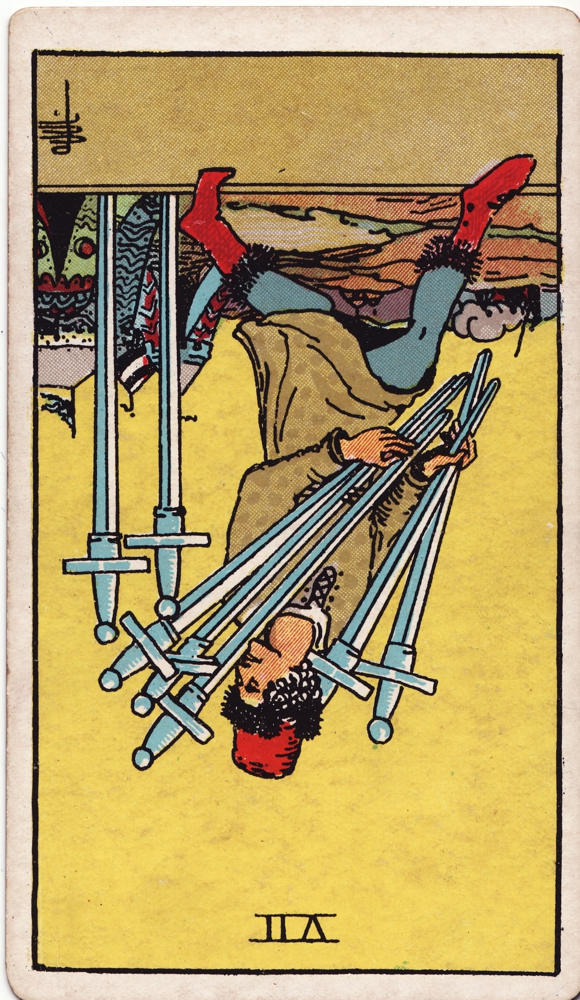

Seven of Swords (Reversed)

Luck: Mental clarity may come in flashes, especially through noticing overlooked details, but overall flow could feel interrupted by overthinking.
Mood: Restless mind, self-doubt, and constant internal analysis. It may be hard to fully relax or feel mentally settled.
Possible Event: I might revisit something I previously ignored or suddenly notice a detail that changes my perspective. At the same time, I could feel overwhelmed juggling multiple tasks, leading to anxiety about unfinished work.
Luck: The day felt mentally active but slightly scattered. I was moving forward, but not in a fully grounded or confident way.
Mood: My mind wouldn’t slow down. I kept thinking, planning, and second-guessing myself. There was a constant layer of anxiety underneath everything.
Event: I worked on planning my program application, attended a meeting, and started building my portfolio and essay ideas. My thoughts kept looping as I tried to figure everything out. At the same time, I felt stressed about unfinished assignments and went to the writing studio, still carrying that lingering pressure.